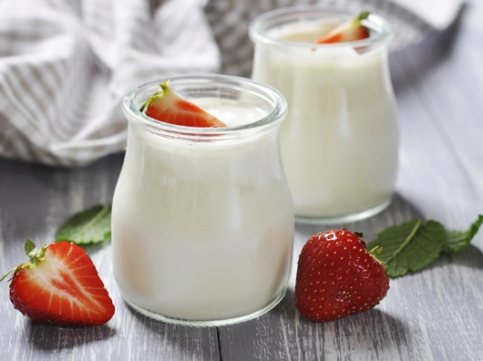

|
|
İLK YOĞURT NASIL YAPILDI? Sütten ürettiğimiz besinlerden biri de yoğurttur. Yoğurt, süt proteinlerinin fermentasyonla çökelmesi sonucu oluşan pıhtıdan ibarettir. Genelikle kaynatılıp ılık hale getirilen süte az miktarda eski yoğurdun eklenmesiyle yapılır. Ilık olan sütün ortasına, daha önceden aynlmış ve suyla karıştırılarak inceltilmiş bir miktar yoğurt yavaş yavaş eklenir. Üzeri kapatılır ve soğumaya alınır. Burada en önemli girdi, sütün yoğurt haline dönüşmesini sağlayan mayadır ve yoğurt yapımında bu görevi eski yoğurt üstlenir. Peki elimizde yoğurt mayalamak için eski yoğurt bulunmuyorsa ne yapmalıyız? İLK YOĞURDUN MAYASI NEDİR? Bu soruların yanıtları araştırıldığında, göçebe olarak yaşayan atalarımızın karınca yumurtasından yoğurt yaptığına dair bilgiler edinildi. Bunun üzerine ilk yoğurdun karınca yumurtasından mı, karınca toprağından mı, ya da normal topraktan mı mayalandığını kanıtlamak için araştırmalar yapıldı. Oktay İnce de çalışmasında, eski yoğurt dışındaki doğal mayaların, sütün yoğurda dönüşmesinde işe yarayıp yaramayacağı ve eğer doğal mayalardan yoğurt olursa, ne kalitede olacağını inceledi. Araştırmasında deneysel olarak süte ev koşullarında değişik oranlarda standart (ticari) yoğurt ve doğal mayalar (normal toprak, karınca yuvası çıkışındaki toprak ve karınca yumurtası) ekleyip, elde edilen yoğurtların ve bunlarla hazırlanan yoğurtların bazı fiziksel ve kimyasal özelliklerini beş gün süreyle araştırdı. İnce, araştırmasının sonuçlan konusunda şu açıklamayı yapıyor: "Doğal mayalar, içerdikleri çeşitli mikroorganizmalar ve bazı kimyasalların (formik asit vc türevleri vb.) sütü fermente etme özellikleriyle sütün yoğurda dönüşmesini sağlıyor. Araştırmamızda denenen yoğurtların her bir neslinin, zamana bağlı olarak pH değerinde azalma olduğu saptandı. Doğal mayalarla elde edilen yoğurtların 2, 3 ve 4. nesillerinde ölçülen pH değerinin, standart yoğurt pH'sı ile aynı düzeylerde olduğu saptandı. Yoğurtların fiziksel görüntüsü bakımından doğal mayalarla elde edilen yoğurtların 3. ve 4. nesillerinde hemen hemen lıiç serum ayrılması gözlenmezken, ev yoğurdunda az da olsa serum ayrılması oldu. Duyusal test sonucunda yapı bakımından en iyi yoğurt, karınca toprağıyla mayalanan yoğurt oldu; görünüm olarak karınca toprağı ve karınca yumurtası olumlu sonuçlar verirken, lezzet olarak da en iyi yoğurdu, karınca toprağıyla yapılan mayalamadan elde ettik. Sonuç olarak, doğal mayalar kullanılarak yoğurt mayalama işlemi sağlandı ve karınca toprağıyla mayalanan yoğurt panelistler ve tüketiciler tarafından en iyi yoğurt seçildi. Eğer bir gün evinizde yoğurt yapmak için maya bulamazsanız, dışarı çıkıp karıncanın oluşturduğu toprak tepecikten biraz almanız yeterli. Unutmayalım ki bu yoğurdu yemek için üç gün beklemek gerekiyor. Çalışmamızın ilerleyen aşamalarında elde edilen yoğurtların mikrobiyolojik analizleri ve besin kalitesini de araştıracağız. |
||
| © 2017 nekibu - Designed by Osman Koç |

|